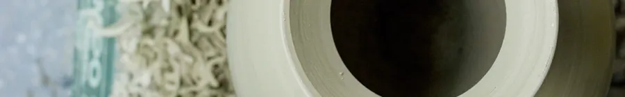
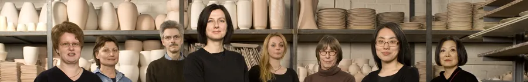

Young-Jae Lee
Werkstatt-Leitung
Geboren 1951 in Seoul. Seit 1987 Leitung der Keramischen Werkstatt Margaretenhöhe.
BiografieHandwerkliche Ästhetik in ihrer Zurückgenommenheit, Konzentriertheit, formalen Perfektion. Aus der ständigen Wiederholung einer handwerklichen Technik, dem Drehen auf der Töpferscheibe, erwächst die vollkommene Schönheit einer Form.

Das Manufakturprogramm der Werkstatt – vor über zwanzig Jahren entwickelt, bis heute unverändert.

„Jedes Stück muss gut zu drehen sein und auch zu benutzen.“
Unter Rückbesinnung auf die formalen Grundprinzipien des Bauhauses hat Young-Jae Lee mit Hildegard Eggemann, Michael Schmandt und Claudia Neumann vor über zwanzig Jahren die charakteristische Formensprache des Manufakturprogramms der Keramischen Werkstatt Margaretenhöhe entwickelt.
Ihre wichtigsten Vorgaben waren: Jedes Stück muss gut zu drehen sein und auch zu benutzen. Alle Teile eines Geschirrs, gleich welcher Farbe, sollten miteinander kombinierbar sein.
Zunächst wurden die 25 Grundelemente eines Geschirrs entworfen: Teller, Schalen, Krüge. In monatelangen Experimenten entstand die 6-tonige Farbskala, von Schattierungen des Jadegrün über ein gebrochenes Weiß bis zu Rostbraun. Diese Grundzüge des Manufakturprogramms haben sich bis heute nicht verändert und sind keiner Mode, keinem Zeitgeist unterworfen.
Mit der Edition wurde das Programm mittlerweile um zusätzliche Stücke erweitert, darunter Vasen, Pflanzengefäße und Dosen. Es werden ausschließlich umweltschonende Materialien und Fertigungsverfahren angewendet. Alle Stücke sind spülmaschinenfest.
Zum ManufakturprogrammVon der Siedlung Margaretenhöhe über die Bauhaus-Manufaktur bis in das Baulager der Zeche Zollverein.

Margarete Krupp realisiert ein Siedlungsvorhaben in der Stadt Essen. Dieses wird nach ihr »Margaretenhöhe« benannt. Die Bauten sollen mit keramischem Schmuck ausgestattet werden. Hermann Kätelhön, ihr künstlerischer Berater, initiiert die Gründung einer Keramikwerkstatt auf dem Gelände und bestimmt Will Lammert zum Leiter der Werkstatt.
Eintragung der »Keramische Werkstatt Margaretenhöhe« in das Handelsregister.
Johannes Leßmann wird Nachfolger von Will Lammert. Er ist Schüler von Otto Lindig, dem bedeutenden Bauhaus-Keramiker. Die Werkstatt stellt ihr Fertigungsprogramm auf die Herstellung von Serienkeramik um und begründet bei strenger Einhaltung der Formgebungsprinzipien des Bauhauses die Tradition einer Manufaktur für anspruchsvolles Gebrauchsgeschirr. Es ist Leßmanns Verdienst, der Bauhaus-Idee im Ruhrgebiet Breitenwirkung verschafft zu haben.
Umzug in ein Gebäude der Zeche Zollverein. Krupp scheidet aus der Gesellschaft aus. Neue Gesellschafter sind die Stadt Essen, der Verein für die bergbaulichen Interessen sowie der Verein zur Pflege der Kunst im rheinisch-westfälischen Industriebezirk. Spätere Übernahme der Anteile der Stadt Essen durch die Rheinelbe Bergbau AG.
Johannes Leßmann fällt im Krieg. Übernahme der Werkstattleitung durch Walburga Külz, die ebenso wie Johannes Leßmann Schülerin Otto Lindigs ist.
Walburga Külz, die die Werkstatt wieder wirtschaftlich konsolidiert hat, übergibt die Leitung an Helmut Gniesmer, der das Werkstattprogramm wieder vorwiegend auf Baukeramik umstellt.
Durch Übernahme der Rheinelbe Bergbau AG geht die Werkstatt in den Besitz der Ruhrkohle AG (später RAG Aktiengesellschaft) über.
Young-Jae Lee und Hildegard Eggemann übernehmen die Leitung der Werkstatt. Wiederaufnahme des Manufakturprogramms mit Serienproduktion eines speziell entworfenen Geschirrs unter Rückbesinnung auf die formalen Grundprinzipien des Bauhauses. Dies wird auch durch die Pressmarke beziehungsweise den Blindstempel deutlich, den die Werkstatterzeugnisse seit 1930 bis heute führen.
Umzug der Werkstatt in das Baulager der Zeche Zollverein (Weltkulturerbe).
Leitung der Werkstatt durch Young-Jae Lee.
Übernahme der Keramischen Werkstatt Margaretenhöhe GmbH von der RAG Aktiengesellschaft durch Young-Jae Lee. Geschäftsführung Young-Jae Lee.
Unsere langjährige Mitarbeiterin Hildegard Eggemann (geb. 1949 in Essen) ist nach kurzer Krankheit am 12. Mai 2025 in Essen verstorben.
Die Menschen hinter dem Manufakturprogramm – manche seit Jahrzehnten in der Werkstatt.

Werkstatt-Leitung
Geboren 1951 in Seoul. Seit 1987 Leitung der Keramischen Werkstatt Margaretenhöhe.
BiografieMitarbeiterin seit 2003
Mitarbeiterin seit 2004
Geselle seit 1979
Bilanzbuchhalterin seit 2006
Hessischer Staatspreis, 1. Preis
Bayerischer Staatspreis für Gestaltung, 1. Preis
Dießener Keramikpreis, 1. Preis
Käuferpreis les Must de scènes d’intérieur, Septembre, Messe Maison & Objet, Paris
Hessischer Staatspreis, 1. Preis
1933 zog die Werkstatt in ein Gebäude der Zeche Zollverein, 1987 in das Baulager der Zeche – heute Weltkulturerbe. Hier wird gedreht, glasiert und gebrannt, und hier können Sie die Werkstatt besuchen.
Besuch & AnfahrtWenn Sie Fragen haben oder Stücke aus unserem Programm erwerben möchten, senden wir Ihnen gerne weitere Informationen oder ein Angebot zu. Selbstverständlich können Sie unsere Werkstatt auch besuchen.